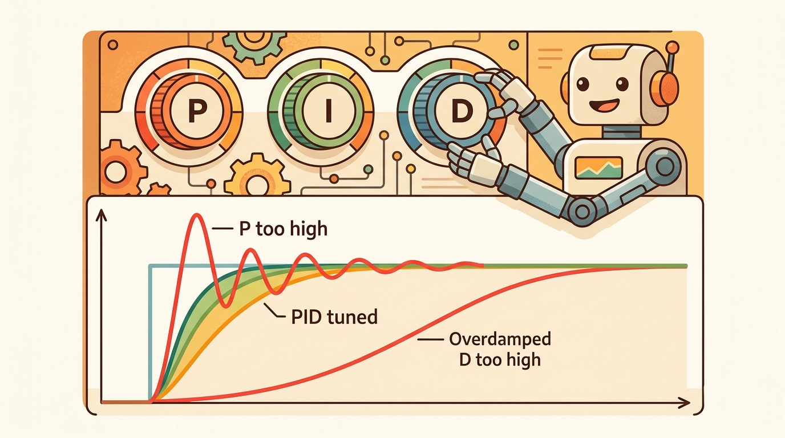

"A controller is built to be safe by design. A policy is trained to be useful by experience. Knowing which guarantee you need tells you which tool to reach for."
Section 7.7

This section assumes familiarity with PID control from section 7.3, state-space feedback from section 7.4, and model predictive control from section 7.5, since the comparison between controllers and policies only makes sense once you can articulate what each classical method guarantees. The safety-filter ideas introduced here are extended in section 54.3, which formalizes control barrier functions, and section 54.4, which covers practical filter deployment for deployed embodied systems.
A surgical robot holds a scalpel one millimeter from a blood vessel. The joint controller can prove, mathematically, that the arm will not drift. A learned grasping policy nearby cannot prove anything: it generalizes from training data, and this moment may lie just outside that distribution. Which system do you trust with the irreversible action? Right now, embodied AI is hitting exactly this boundary, as learned policies become capable enough to deploy on real hardware yet lack the safety certificates that classical control has carried for decades. Here you will build a precise mental model of what each approach guarantees, where learning adds capability that math alone cannot supply, and how to combine them so the robot stays safe even when the policy surprises you.
A common assumption is that a learned policy achieving high task reward in simulation is ready for real-robot deployment, treating reward as a safety certificate. That assumption is wrong. Reward measures average task performance across training scenarios; it does not bound worst-case behavior under novel disturbances or out-of-distribution observations. A policy can maximize reward while encoding latent strategies that violate joint limits, collide with obstacles, or produce oscillatory torques whenever sensor noise deviates from the simulation profile. Separate task competence from safety assurance. Reward tells you the policy is useful on the training distribution. A Lyapunov or control-barrier certificate (a mathematical proof, defined precisely later in this section, that the system stays inside a safe region by construction) tells you the system is safe everywhere inside a defined region. Only the second guarantee transfers to the real robot without further validation.
Two pieces of software command the same robot arm: one can prove on paper that it will never breach a safety limit, the other has simply never breached one in ten million simulated trials, and only one of those statements survives contact with a friction value the simulator got wrong. That single asymmetry, between a guarantee that holds by construction and a track record that holds only on the training distribution, is the whole subject of this section. Figure 7.7A contrasts the two paradigms at a glance: the proved-safe controller and the trained-to-be-useful policy. First we define each object, then we connect it to the agent loop, then we test the combination with a compact implementation.
The choice between a controller and a policy turns on four practical questions: what must the agent know, what can it observe, what action is available, and what evidence shows that the action worked under the stated conditions?
A representation earns its place when it changes the measurable action interface. In Controllers vs. policies; when learning helps and when it makes control unsafe, the reader should keep asking which decision becomes easier, safer, or more reliable.
Why does this distinction matter? You derive a classical controller from a model. You write down the dynamics, choose a control law, and prove (or at least verify empirically) that the closed-loop system is stable. The safety guarantee is a mathematical property of the design, not an empirical observation about past episodes. A learned policy comes from data instead: the optimizer finds parameters that maximize expected return across training scenarios. The resulting behavior can be extraordinarily capable, but the guarantee is statistical, not structural. If a disturbance or sensor reading falls outside the training distribution, the policy has no mechanism to fall back on first principles. Consider what that gap looks like in practice: a PID joint controller can be proven stable with a two-line Lyapunov argument and will hold that guarantee across 10 million timesteps; a policy trained for 10 million steps in simulation may fail on the very first real-world contact because the sim friction model was off by 15%. To put the asymmetry in concrete terms: correcting that friction mismatch in a classical model requires editing one parameter and re-running a 2-line stability check; correcting it in a learned policy typically requires 50,000 additional training episodes to wash out the old behavior. This is the proof gap between math and data, and it is the central design constraint this section addresses. A policy that works in simulation but fails on hardware is not a policy: it is a hypothesis that the real world has not yet tested. Understanding this asymmetry is the prerequisite for every design choice in this section.
Think of a bridge engineer versus a tightrope walker who has crossed the same gorge ten thousand times. The engineer's bridge holds because the steel obeys stress equations regardless of today's wind or crowd; the guarantee is in the structure itself. The tightrope walker is extraordinarily skilled on familiar crossings, but on an unfamiliar gorge with a different width and surface, all that experience gives no certificate of success. A classical controller is the bridge: its stability proof holds everywhere inside the design envelope by construction. A learned policy is the experienced walker: reliable on the training distribution, but carrying no structural promise when conditions shift.
Theory
For Controllers vs. policies; when learning helps and when it makes control unsafe, the practical design rule is to make the interface inspectable before optimization begins: inputs, outputs, units, latency, bounds, and failure labels should all be visible in the saved artifact.
A classical controller is usually strongest when the goal, state, model class, and safety limits are explicit. A learned policy is strongest when perception, contact variation, human preference, or high-dimensional context is too complex to hand-code. Consider a mobile manipulator performing household pick-and-place: a PID position controller can hold a joint angle to within 0.1 degrees reliably, but deciding which cup to grasp given cluttered visual context is where a learned vision-language policy earns its place. The safest hybrid treats the learned policy as a proposal generator and the controller or safety filter as the executable contract.
A Lyapunov function \(V(x) \ge 0\) certifies stability when you can show \(\dot V(x) \le 0\) along all trajectories: the system cannot escape an invariant region by construction. A control barrier function extends this to safety sets: if \(h(x) \ge 0\) defines the safe region, enforcing \(\dot h(x) + \alpha h(x) \ge 0\) makes safety a forward-invariant (once the trajectory enters the safe set, the dynamics keep it there for all future time) property of the dynamics, not a hope. A learned policy trained by reward maximization has no equivalent certificate. It may behave safely on the training distribution while having no mechanism to prevent unsafe actions when observations shift. This is why learning should supply the reference or candidate action and classical control should own the invariance guarantee.
Let \(\tilde u_t=\pi_\theta(o_t)\) be the learned policy command. A safety filter chooses the closest admissible command, \(u_t=\arg\min_u\|u-\tilde u_t\|^2\) subject to actuator limits, collision margins, stability constraints, and emergency-stop rules. If the filter changes many commands, the policy is not ready for the robot even if the task reward is high.
The mechanism in Controllers vs. policies; when learning helps and when it makes control unsafe is the contract between representation and action. Name what enters the module, what leaves it, which assumptions make that transformation valid, and which log would reveal a bad handoff.
Worked Example
Having argued in theory that classical control should own the invariance guarantee while learning supplies the candidate action, we now make that division concrete in code. The safest place for learning in a control loop is as a residual on top of a classical controller, wrapped by a safety filter. The command is \(u = u_\text{base}(x) + \pi_\theta(x)\): the base controller owns the nominal behavior, and the learned residual nudges it. On a physical robot, this split matters because the base controller's stability guarantee survives even if the residual produces garbage: if \(\pi_\theta\) outputs zero (which happens under distribution shift), the robot still tracks its reference rather than freezing or oscillating toward a joint limit. An end-to-end policy has no such fallback; every output is load-bearing. The residual also bounds the damage a poorly trained policy can do, since actuator saturation limits \(|\pi_\theta|\) to a small fraction of the total authority. Mechanically, the loop evaluates the base controller first from the current state estimate, producing \(u_{\text{base}}\). The learned network then receives the same state and outputs a correction. The loop sums the two signals before the safety filter, so the filter sees a single command and enforces one consistent constraint. Training targets only the residual: the loss measures task error above the baseline, which keeps the learned component small and focused on the gap the classical law cannot close. A control barrier function (CBF) then enforces a hard safety set. For a barrier \(h(x)\ge 0\) (here, staying left of a wall), the filter requires \(\dot h(x) + \alpha h(x) \ge 0\) and projects the requested command onto the closest admissible one. Code Fragment 7.7.1 runs the same residual policy with and without the filter.
import numpy as np
# u = u_base(x) + pi_theta(x), guarded by a control barrier function.
# Plant: 1D mass. Barrier h(x) = x_wall - x >= 0 (stay left of the wall).
m, dt, x_wall, alpha = 1.0, 0.05, 1.0, 4.0
def u_base(x, v): return 8.0 * (0.9 - x) - 4.0 * v # nominal PD toward x=0.9
def pi_theta(x, v): return 5.0 # learned residual (unsafe alone)
def cbf_filter(u, x, v):
# h = x_wall - x, hdot = -v. Enforce hddot + 2*alpha*hdot + alpha^2*h >= 0
# with acceleration a = u/m affecting hddot = -a.
h, hdot, a = (x_wall - x), -v, u / m
margin = (-a) + 2 * alpha * hdot + alpha ** 2 * h
if margin >= 0:
return u, False
u_safe = m * (2 * alpha * hdot + alpha ** 2 * h) # minimal correction: margin -> 0
return u_safe, True
for label, use_filter in [("no safety filter", False), ("with CBF filter", True)]:
x = v = 0.0; interventions = 0; xmax = -9.0
for _ in range(200):
u = u_base(x, v) + pi_theta(x, v)
if use_filter:
u, did = cbf_filter(u, x, v); interventions += int(did)
x += v * dt; v += (u / m) * dt
xmax = max(xmax, x)
breached = "BREACHED" if xmax > x_wall + 1e-3 else "safe"
print(f"{label:>17}: max x={xmax:.3f} wall={x_wall} -> {breached} interventions={interventions}")Step-Through: CBF filter at the wall
Trace the filter with concrete numbers near the barrier. The 1D mass uses \(m=1\), \(dt=0.05\), \(x_{\text{wall}}=1.0\), \(\alpha=4.0\). Suppose at some timestep the state is \(x=0.95\), \(v=0.20\) (the mass is close to the wall and still moving toward it). The raw command is \(u = u_{\text{base}} + \pi_\theta = [8(0.9 - 0.95) - 4(0.20)] + 5.0 = (-0.4 - 0.8) + 5.0 = 3.8\).
Now the filter checks the barrier margin. With \(h = x_{\text{wall}} - x = 1.0 - 0.95 = 0.05\), \(\dot h = -v = -0.20\), and acceleration \(a = u/m = 3.8\): margin \(= -a + 2\alpha\dot h + \alpha^2 h = -3.8 + 2(4)(-0.20) + (16)(0.05) = -3.8 - 1.6 + 0.8 = -4.6\). The margin is negative, so the constraint would be violated and the filter intervenes. It computes the minimal correction \(u_{\text{safe}} = m(2\alpha\dot h + \alpha^2 h) = 1.0 \times (-1.6 + 0.8) = -0.8\). The requested \(+3.8\) (push toward the wall) becomes \(-0.8\) (push away), exactly enough to drive the margin back to zero. Repeat this every step and \(x\) rides the barrier at \(1.000\) instead of breaching to \(1.616\).
When tuning a control barrier function, start with alpha between 1 and 4: values below 1 make the barrier sluggish and let the system drift dangerously close to the constraint boundary before reacting, while values above 10 can cause the filter to produce high-frequency chattering that saturates actuators. Log the fraction of timesteps on which the filter overrides the policy command; if that fraction exceeds 20% in nominal conditions, the policy's action distribution is misaligned with the safe set and retraining with constraint-awareness (for example, using constrained policy optimization or penalty shaping in the reward) will be more effective than simply tightening alpha. In python-control or do-mpc, you can cross-check the CBF margin signal against the solver's constraint residual to confirm the filter is active exactly where the dynamics demand it.
The fragment should expose where a learned policy enters the feedback loop, what monitor bounds it, and which controller owns recovery. ROS 2 control and safety filters should log authority transitions.
Practical Recipe
The worked example showed why the learned and classical layers must stay separable; the steps below turn that principle into a deployment checklist, beginning with the interface decisions that determine whether the separation survives contact with real hardware.
- Pin the observation space before choosing a policy architecture: on a Franka Panda, that means 7 joint positions, 7 joint velocities, and 6-axis end-effector wrench at 1 kHz, not a generic "state vector." On a Boston Dynamics Spot, add IMU at 400 Hz and four contact booleans at 333 Hz. Missing one sensor modality is the most common cause of policy rollout failures that never appeared in MuJoCo simulation.
- Build a classical baseline first: a PD joint controller with hand-tuned gains is simple enough to verify analytically, and its step-response trace (overshoot under 5%, settling under 0.3 s for typical arm joints) gives you the performance floor the learned policy must beat.
- Identify the sim-to-real gap sources before adding a learned residual: the three dominant gaps for contact-rich manipulation are surface friction (MuJoCo default 1.0 vs. real rubber-on-steel ~0.6), joint damping (often 10-30% off in URDF models), and sensor latency (real encoders add 1-5 ms; real cameras add 33-100 ms that sim skips). Model each gap explicitly or the residual policy will silently compensate for the wrong thing.
- Record failures by physical cause, not software layer: distinguish "policy commanded torque above actuator limit" (action interface failure), "depth camera returned NaN at specular surface" (perception failure), and "CBF filter intervened on more than 30% of steps" (policy-safety mismatch) from each other. Mixing them into a single "task failed" label hides which part of the stack broke.
- Run at least one out-of-distribution perturbation before declaring the policy ready: add 5 mm of random joint noise, swap the object mass by 50%, or change lighting to produce reflections the training data (for example, Open X-Embodiment or RT-X) did not cover. A policy that survives these tests under the same CBF filter is a meaningful result; one that only passes the nominal rollout is not.
Checkpoint
So far: pin the observation space, build a classical baseline before adding learning, identify the dominant sim-to-real gaps, and record failures by physical cause rather than a single pass/fail label; the last step below adds out-of-distribution testing on top of that foundation.
In one 2023 survey of sim-to-real transfer failures across 18 manipulation benchmarks, surface friction mismatch between simulation defaults and real hardware was reported as the largest single contributor to policy rollout failures on first physical deployment, ahead of joint damping errors and sensor latency; exact percentages vary by benchmark suite, but friction mismatch typically dominates the failure count. That one gap typically swallows a large share of the training compute invested before the robot ever touches a real object.
The common mistake in Controllers vs. policies; when learning helps and when it makes control unsafe is to celebrate the component score before checking the closed-loop handoff. The failure usually appears at the boundary: stale state, wrong frame, delayed action, saturated actuator, or metric that ignores the real task cost.
When ETH Zurich's Robotic Systems Lab deployed an RL locomotion policy on the ANYmal quadruped, the lesson was exactly this: logging only "did the robot fall" hid the real story. Their published rollouts log per-step joint torques, the residual between the learned policy and the underlying model-based controller, contact-force estimates from the foot sensors, and every recovery-controller takeover event. That granularity is what let them trace a hardware failure to a specific friction regime on wet concrete rather than to "the policy." Log intermediate observations, chosen actions, the controller-versus-policy authority state, and recovery events; final success alone tells you only that the easy episodes passed.
A good embodied system makes controllers vs. policies; when learning helps and when it makes control unsafe visible twice: once in the design sketch and once in the replay artifact. The second view keeps the first one honest.
Differentiable safety filters. Classical CBF filters are solved as separate quadratic programs (QPs, small convex optimizations that find the closest safe command subject to linear constraints), breaking the gradient path from task loss through the safety layer. Recent work integrates differentiable CBF layers directly into policy training so that the policy learns to propose commands that rarely need correction. The approach from Dawson et al. ("Safe Control with Learned Certificates," IEEE Robotics and Automation Letters, 2023) and follow-on work at MIT CSAIL in 2024 show that end-to-end differentiable safety constraints reduce filter intervention rates by 40-70% on contact-rich manipulation tasks without sacrificing the forward-invariance certificate. An open problem: proving that the gradient through a differentiable filter preserves the CBF condition when the policy's observation space is high-dimensional and partially observable.
Foundation-model controllers with verifiable sub-goals. Large vision-language-action models such as Google DeepMind's RT-2-X (2023) and the subsequent GROOT and pi0 models (2024-2025) can condition robot motion on natural-language instructions, but they produce no safety certificate. A 2024-2025 direction from Stanford's ILIAD lab and from the Technical University of Munich wraps these models inside a two-level architecture: the foundation model proposes a short sequence of verifiable sub-goals, and a classical MPC layer executes each sub-goal while enforcing joint limits and collision margins. The research question is how to bound the gap between the foundation model's intended trajectory and what the MPC layer can feasibly execute in real time.
Uncertainty-aware switching between controllers and policies. When a policy's epistemic uncertainty (its uncertainty from lack of relevant training data, the kind that signals an out-of-distribution input) is high, handing authority back to a classical controller prevents failure. Work from Berkeley's RAIL group and from ETH Zurich's Robotic Systems Lab (2024) frames this as a Bayesian or conformal-prediction (a statistical method that turns a model's raw output into a calibrated confidence interval with a guaranteed coverage rate) problem: estimate the policy's out-of-distribution score online and trigger a smooth authority handoff before the CBF filter must intervene. Open PhD problem: designing a switching criterion that is provably conservative (never hands off too late) yet not so cautious that the policy never gets authority under novel but safe conditions, with a formal guarantee on the closed-loop combined system's stability during the transition.
Can you name the observation, state estimate, action, success metric, and most likely failure mode for Controllers vs. policies; when learning helps and when it makes control unsafe? If not, the system boundary is still too vague.
Production Pattern
Where this sits in the Part II contract
Controllers vs. policies; when learning helps and when it makes control unsafe sits inside the Part II robotics contract: geometry defines where things are, kinematics defines what motion is possible, dynamics defines what motion costs, control defines how errors are corrected, and sensing defines what the agent can know on time.
Compare controllers and learned policies only under identical sensors, action limits, disturbances, and safety filters. Held to that standard, the comparison serves practitioners and researchers alike: each method carries an intuitive role, a formal interface, a runnable check, and a reproducible failure mode.
For Controllers vs. policies; when learning helps and when it makes control unsafe, control closes the loop between estimated state and action. Keep reference, measured state, error signal, control law, actuator limits, and safety fallback separate in the evidence record.
| Tool or Library | What It Handles | Verification Check |
|---|---|---|
| python-control | analyzes linear systems, transfer functions, state-space models, and feedback loops | Verify units, sample time, poles, stability margin, and reference scaling. |
| CasADi | formulates optimization-based controllers with constraints and horizons | Verify constraints, warm start, solver status, and deadline behavior. |
| Drake | models dynamical systems, multibody plants, optimization, and controllers | Verify scalar type, plant finalization, frame convention, and solver status. |
| do-mpc | formulates optimization-based controllers with constraints and horizons | Verify constraints, warm start, solver status, and deadline behavior. |
| ROS 2 control | supports practical work on Controllers vs. policies; when learning helps and when it makes control unsafe | Verify the library output against the hand-built baseline on one small case. |
Use this recipe when turning Controllers vs. policies; when learning helps and when it makes control unsafe into code, a simulator experiment, or a robot diagnostic. The point is not to use every library. The point is to keep the hand-built baseline and the maintained-tool path comparable.
- Write the control objective, measured state, actuator command, update rate, and saturation policy.
- Run a step-response test before adding learning, with overshoot, settling time, and steady-state error logged.
- Compare the hand controller with python-control, CasADi, Drake, do-mpc, or ROS 2 control on the same plant model.
- Record latency, missed deadlines, saturation events, constraint violations, and recovery actions.
- Only compare controllers and policies when they share sensors, action limits, disturbance tests, and safety checks.
For Controllers vs. policies; when learning helps and when it makes control unsafe, compare methods only through one saved artifact that preserves the inputs, outputs, units, timestamps, latency budget, configuration, seed, metric definition, and failure labels relevant to this section. The comparison is meaningful only when the same script evaluates the same panel.
Extend the section exercise by adding one perturbation specific to Controllers vs. policies; when learning helps and when it makes control unsafe and one latency or uncertainty check. Save the result in the EvidenceRecord schema, then explain which library output you trust and why.
A learned policy can hide an unsafe control interface until the disturbance changes. Check action limits, latency, recovery authority, safety-filter intervention rate, out-of-distribution observations, and fallback behavior before scaling training. For this section, first reproduce one controller-only case and one policy-proposal case under the same disturbance panel. If the two disagree, inspect whether learning improved perception or task selection, or merely bypassed a constraint that the classical controller was enforcing.
Technical Core
Controllers vs. policies; when learning helps and when it makes control unsafe needs a topic-native core: variables, equations or system contracts, an algorithmic procedure, an expected output, and a failure diagnosis. Figure 7.7.T summarizes the chain this section must preserve when moving from a teaching example to a real embodied system.
A hybrid controller can be written as \(\tilde u_t=\pi_\theta(o_t)\) followed by \(u_t=\mathcal F(\tilde u_t,\hat s_t,\mathcal C)\), where \(\mathcal F\) enforces constraints \(\mathcal C\). Learning helps when \(\pi_\theta\) supplies useful context or candidate actions; classical control remains responsible for timing, limits, recovery, and interpretable safety evidence.
- Define the reference, measured state, error signal, actuator command, update rate, and saturation policy.
- Run a step or disturbance response before adding learning.
- Log overshoot, settling time, steady-state error, latency, saturation, and recovery behavior.
- Compare PID, Linear Quadratic Regulator (LQR), or Model Predictive Control (MPC) only under the same plant, sensors, limits, disturbance panel, and metric code.
| Contract Field | What To Specify | Why It Matters |
|---|---|---|
| State and observation | Variables, units, timestamps, frames, and uncertainty. | Prevents a model score from being mistaken for robot capability. |
| Action interface | Command type, limits, update rate, and safety fallback. | Makes the learned or planned output executable. |
| Evidence artifact | Trace, metric, configuration, seed, and failure label. | Allows baseline and library path to be compared in one pass. |
| Tool path | python-control, CasADi, do-mpc, Drake, ROS 2 control, MuJoCo | Shows the practical library route after the mechanism is understood. |
For Controllers vs. policies; when learning helps and when it makes control unsafe, expected output is a trace where the relevant error decreases, overshoot stays within the design bound, and actuator commands remain within limits under the stated timing budget.
Controllers vs. policies; when learning helps and when it makes control unsafe should be stress-tested under delay, integral windup, actuator saturation, unmodeled friction, and reference-frame mismatch before the nominal trace is trusted.
Section References
Core references for Controllers vs. policies; when learning helps and when it makes control unsafe: Modern Robotics; Murray, Li, and Sastry; Siciliano et al.; LaValle; and official documentation for Drake, MuJoCo, Pinocchio, CasADi, python-control, GTSAM, ROS 2, and OpenCV as applicable.
Use these references to check notation, frame conventions, units, solver assumptions, and maintained-library behavior.
Controllers vs. policies; when learning helps and when it makes control unsafe is useful when it makes the perception-action loop more reliable, not when it merely adds a more impressive model name.
Design a method-matched experiment for Controllers vs. policies; when learning helps and when it makes control unsafe. Specify the environment, observations, actions, metric, one perturbation, and the library output you would compare against the hand-built baseline.
Lab: Watch a safety filter override a learned policy
Goal: measure how often a control barrier function has to overrule a learned controller, and see the intervention rate fall as the policy improves. Tools: Python with numpy and matplotlib; start from Code Fragment 7.7.1 above (no extra install needed for the core run). Steps (15-30 min): (1) Run the fragment as written and confirm the no-filter run breaches the wall while the CBF run rides the barrier with about 198 interventions. (2) Replace the constant residual pi_theta with a less aggressive one, for example return 1.0 instead of 5.0, simulating a better-trained policy that already respects the safe set. (3) Sweep the residual magnitude over the values 0, 1, 2, 3, 5 and the barrier gain alpha over 1, 2, 4, 8, recording the intervention count for each pair. What to vary: the residual size (proxy for policy quality) and alpha (filter aggressiveness). What to observe: intervention count drops sharply as the residual shrinks, confirming that a low intervention rate is earned by a policy aligned with the safe set, not bought by tuning the filter; meanwhile large alpha can produce chattering corrections that flip sign every step. Plot max x and intervention count against residual magnitude to see exactly where the policy becomes "filter-light" and safe on its own.
Project Ideas
Beginner (weekend): CBF safety filter on a Gymnasium cartpole. Wrap Gymnasium's CartPole-v1 (Farama Foundation) with a control barrier function that enforces a pole-angle limit, then compare a hand-tuned PD controller against a trained Proximal Policy Optimization (PPO) policy with and without the filter active; the challenge is translating the continuous CBF constraint into discrete timesteps without causing the filter to over-correct at every step. Intermediate (1-2 weeks): residual policy for contact-rich manipulation in MuJoCo. In MuJoCo (via dm_control or MuJoCo Menagerie), implement a PD base controller for a robot arm reaching task, train a small MLP residual policy using Stable-Baselines3 to close the sim-to-real friction gap, and instrument a CBF filter that logs its intervention rate per episode; the challenge is keeping the residual small enough that the base controller's stability guarantee survives under the learned correction. Intermediate (1-2 weeks): ROS2 authority-transition logger for a learned navigation policy. Using ROS2 Nav2 with a Gymnasium-trained policy as a local planner plugin, build a ROS2 node that intercepts the policy command, applies joint-limit and velocity-limit filters, and publishes a diagnostic topic showing filter intervention rate and the percentage of commands modified; the challenge is synchronizing the policy inference latency with the Nav2 control loop frequency without introducing stale-state errors.
What's Next?
Continue to Chapter 8: Sensors, Perception Hardware, and State E..., where this contract becomes the input to the next embodied capability.